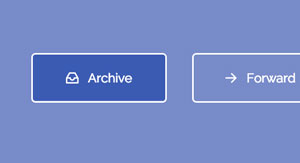
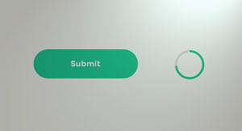

Previous Demo
Back to the Codrops article
SVG Ripples
Google Material Design Ripple Effect with SVG
circle
circle & radialGradient
polygon
rect & linearGradient
Click for Ripple
If you enjoyed this demo you might also like:

Inspiration for Button Styles and Effects

How to Create a Circular Progress Button